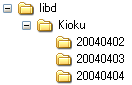
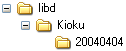

指定したフォルダの下にあるファイル/フォルダを、指定したファイル/フォルダを除いてすべて削除します。
[VB6]
Public Function RemoveSubFolders( _
strFolder As String, _
strExcept As String _
) As Long
[C++]
int RemoveSubFolders(
const char* strFolder,
const char* strExcept
);
正常終了のときは0を、エラーのときは0以外の値を戻します。
[VB6] 戻り値を、Error関数に渡すことで、エラーの内容を文字列に変換できます。
[C++] 戻り値が、正のときはGetLastError関数の値と同じ意味です。負数のときは、strFolderに指定した値が異常です。
strFolder以下にあるファイルを、strExceptと一致するファイルまたはフォルダを除いてすべて削除します。 strExceptは、単純な文字列で大文字と小文字を区別しません。フォルダ名と一致すれば、フォルダ以下すべてを削除対象外にします。
間違って、c:\とか指定したら、大変なことになります。注意してください。
 (削除前) → (削除後) 
フォルダ構成が図のようになっている時、20040404フォルダ以外をすべて削除するコードは、以下のようになります。
[VB6]
Dim ret As Long
ret = RemoveSubFolders("c:\libd\kioku", "20040404")
If ret <> 0 Then
MsgBox "RemoveSubFolders error " & ret & ": " & Error(ret)
End If
[C++]
int ret;
ret = RemoveSubFolders("c:\\libd\kioku", "20040404")
if (ret != 0) {
printf("RemoveSubFolders error %d\n", ret);
}